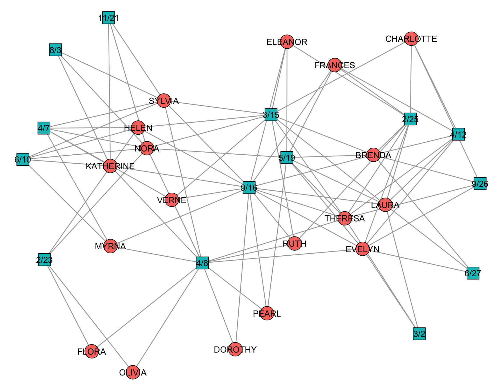
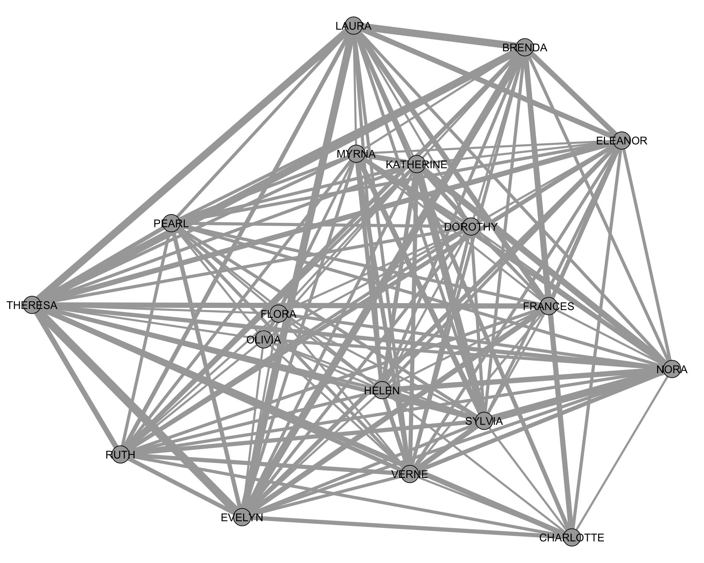
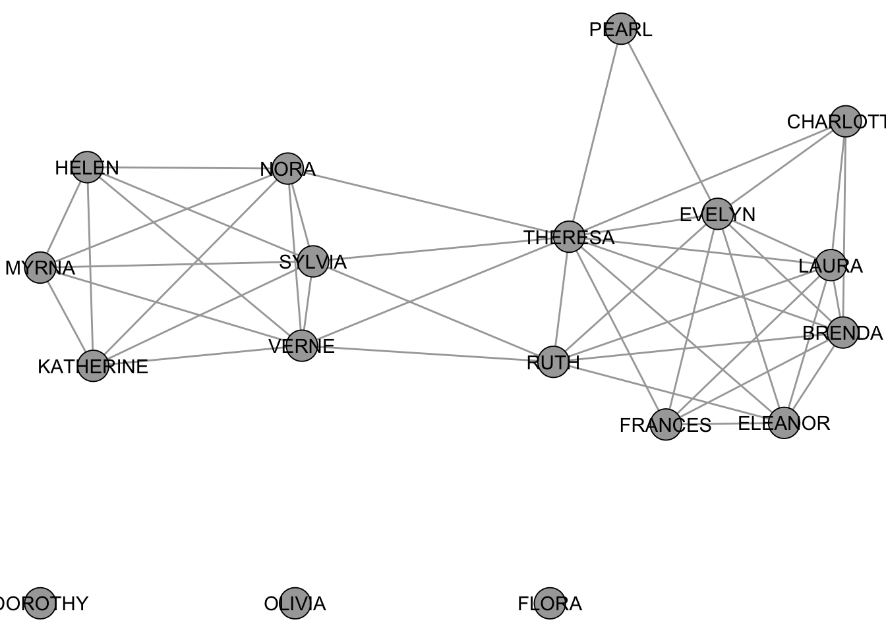
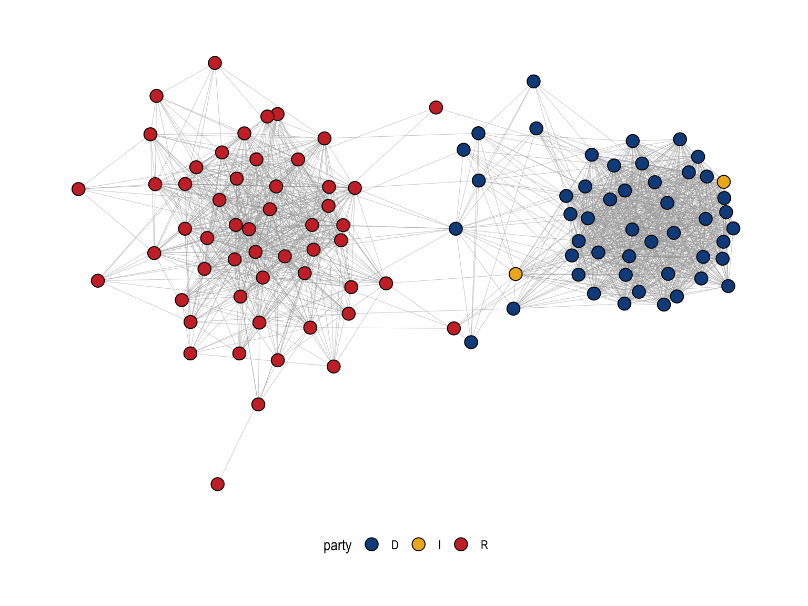

library(igraph)
library(networkdata)
library(tnet)
library(backbone)6 Two-Mode Networks
A two-mode network is a network that consists of two disjoint sets of nodes (like people and events). Ties connect the two sets, for example participation of people in events. Other examples are
- Affiliation networks (Membership in institutions/clubs)
- Voting/Sponsorship networks (politicians and bills)
- Citation network (authors and papers)
- Co-Authorship networks (also authors and papers)
There are two ways of analysing a two-mode network. Either directly by using methods specifically created for such networks, or by projecting it to a regular one-mode network (Everett and Borgatti 2013). The advantage of the former is that there is no information loss and the advantage of the latter is that we are working with more familiar data structures. The projection approach is more popular these days, but we will still introduce some direct methods to analyse two-mode networks. The main part of this chapter will however deal with the projection approach.
6.1 Packages Needed for this Chapter
6.2 Two-Mode Data Structure
Two-mode network data (also called bipartite network data) represent relationships between two distinct types of entities rather than ties among members of a single set. Typical examples include individuals and organizations, students and courses, or authors and publications. Instead of being represented as a standard actor-by-actor adjacency matrix, two-mode networks are stored as an incidence matrix or biadjacency matrix, in which rows represent one type of node (e.g., individuals) and columns represent the other type (e.g., events or organizations). The entries in the matrix indicate whether a tie exists across the two sets—for instance, whether a person attended an event or belongs to an organization. This incidence matrix structure makes it possible to analyze affiliation patterns, shared participation, and broader forms of social or institutional embeddedness.
Two-mode networks are especially useful for analyzing how connections emerge indirectly, for example, when two individuals are linked because they attend the same event or belong to the same organization.
To illustrate methods tailored for two-mode networks, we will use the well-known Southern Women dataset (Davis, Gardner, and Gardner 2009). This classic dataset records the attendance patterns of 18 women at 14 social events in the American South, and has become a foundational example in network analysis. The network is included in the networkdata package and provides a canonical example of an affiliation (incidence) matrix suitable for demonstrating two-mode network methods and one-mode projections. The biadjacency matrix and can be obtained via as_biadjacency_matrix(). This matrix is visualized in Figure 6.1.
data("southern_women")
southern_womenIGRAPH 1074643 UN-B 32 89 --
+ attr: type (v/l), name (v/c)
+ edges from 1074643 (vertex names):
[1] EVELYN --6/27 EVELYN --3/2 EVELYN --4/12 EVELYN --9/26
[5] EVELYN --2/25 EVELYN --5/19 EVELYN --9/16 EVELYN --4/8
[9] LAURA --6/27 LAURA --3/2 LAURA --4/12 LAURA --2/25
[13] LAURA --5/19 LAURA --3/15 LAURA --9/16 THERESA --3/2
[17] THERESA --4/12 THERESA --9/26 THERESA --2/25 THERESA --5/19
[21] THERESA --3/15 THERESA --9/16 THERESA --4/8 BRENDA --6/27
[25] BRENDA --4/12 BRENDA --9/26 BRENDA --2/25 BRENDA --5/19
[29] BRENDA --3/15 BRENDA --9/16 CHARLOTTE--4/12 CHARLOTTE--9/26
+ ... omitted several edges# get biadjacency matrix
A <- as_biadjacency_matrix(southern_women)
A 6/27 3/2 4/12 9/26 2/25 5/19 3/15 9/16 4/8 6/10 2/23 4/7 11/21 8/3
EVELYN 1 1 1 1 1 1 0 1 1 0 0 0 0 0
LAURA 1 1 1 0 1 1 1 1 0 0 0 0 0 0
THERESA 0 1 1 1 1 1 1 1 1 0 0 0 0 0
BRENDA 1 0 1 1 1 1 1 1 0 0 0 0 0 0
CHARLOTTE 0 0 1 1 1 0 1 0 0 0 0 0 0 0
FRANCES 0 0 1 0 1 1 0 1 0 0 0 0 0 0
ELEANOR 0 0 0 0 1 1 1 1 0 0 0 0 0 0
PEARL 0 0 0 0 0 1 0 1 1 0 0 0 0 0
RUTH 0 0 0 0 1 0 1 1 1 0 0 0 0 0
VERNE 0 0 0 0 0 0 1 1 1 0 0 1 0 0
MYRNA 0 0 0 0 0 0 0 1 1 1 0 1 0 0
KATHERINE 0 0 0 0 0 0 0 1 1 1 0 1 1 1
SYLVIA 0 0 0 0 0 0 1 1 1 1 0 1 1 1
NORA 0 0 0 0 0 1 1 0 1 1 1 1 1 1
HELEN 0 0 0 0 0 0 1 1 0 1 1 1 0 0
DOROTHY 0 0 0 0 0 0 0 1 1 0 0 0 0 0
OLIVIA 0 0 0 0 0 0 0 0 1 0 1 0 0 0
FLORA 0 0 0 0 0 0 0 0 1 0 1 0 0 0
In igraph, a graph is recognized as a two-mode (bipartite) network when its vertices contain a logical attribute named type. This attribute distinguishes the two node sets: typically, one mode is coded as FALSE and the other as TRUE. Rather than relying on separate data structures, igraph uses this vertex-level attribute to determine how functions for bipartite graphs, such as projections or incidence matrix extraction, should behave.
We can inspect how many vertices belong to each mode using:
table(V(southern_women)$type)
FALSE TRUE
18 14 The logical type attribute is also used directly in visualization. Because igraph stores information about which nodes belong to which mode, we can map this attribute to visual aesthetics in ggraph. In the plot below, type determines both the shape and fill color of the nodes, allowing us to clearly distinguish between women and events in the bipartite network.
ggraph(southern_women, "stress") +
geom_edge_link(edge_color = "grey66") +
geom_node_point(
aes(fill = type, shape = type),
size = 8,
show.legend = FALSE
) +
geom_node_text(aes(label = name)) +
scale_shape_manual(values = c(21, 22)) +
theme_void()
In the following sections, we will examine both analytical strategies introduced above. First, we briefly consider direct approaches that analyze the two-mode (incidence) structure without transforming it, thereby preserving the full information contained in the bipartite network. We then turn to the more commonly used projection approach, in which the two-mode network is converted into one-mode networks (e.g., women-to-women or event-to-event). While projections rely on more familiar network representations and measures, they inevitably involve some information loss. For this reason, we introduce both perspectives, though the main focus of this chapter will be on the projection-based analysis.
6.3 Direct Approach
Several packages provide methods for analyzing two-mode networks directly, without first projecting them into one-mode structures. In particular, the tnet and bipartite packages extend familiar one-mode concepts (such as clustering or centrality) to bipartite settings.
For example, recall that the standard (one-mode) clustering coefficient is based on counting triangles, i.e. closed triplets of nodes. However, triangles cannot exist in a two-mode network because ties only occur between the two distinct node sets (e.g., women \(\leftrightarrow\) events), not within them. This means the usual definition of transitivity must be adapted (Opsahl 2013).
If we naively apply igraph’s transitivity function to the bipartite graph, it will return zero (or undefined local values), precisely because triangles are structurally impossible:
transitivity(southern_women)[1] 0transitivity(southern_women, type = "local") EVELYN LAURA THERESA BRENDA CHARLOTTE FRANCES ELEANOR PEARL
0 0 0 0 0 0 0 0
RUTH VERNE MYRNA KATHERINE SYLVIA NORA HELEN DOROTHY
0 0 0 0 0 0 0 0
OLIVIA FLORA 6/27 3/2 4/12 9/26 2/25 5/19
0 0 0 0 0 0 0 0
3/15 9/16 4/8 6/10 2/23 4/7 11/21 8/3
0 0 0 0 0 0 0 0 To address this limitation, the tnet package defines a two-mode clustering coefficient based on cycles of length six, which involve three nodes from each mode (e.g., woman \(\rightarrow\) event \(\rightarrow\) woman \(\rightarrow\) event \(\rightarrow\) woman \(\rightarrow\) event \(\rightarrow\) back to the first woman). These six-step cycles are the bipartite analogue of triangles in one-mode networks.
library(tnet)
el_women <- as_edgelist(southern_women, names = FALSE)
clustering_tm(el_women) # global clustering (first mode)[1] 0.7718968clustering_local_tm(el_women) # local clustering (first mode) node lc
1 1 0.7666667
2 2 0.8421751
3 3 0.7523437
4 4 0.8387909
5 5 1.0000000
6 6 0.8690476
7 7 0.7959184
8 8 0.6462585
9 9 0.6702509
10 10 0.6740891
11 11 0.7138810
12 12 0.7695560
13 13 0.7461929
14 14 0.8379501
15 15 0.8159204
16 16 0.5407407
17 17 0.5806452
18 18 0.5806452clustering_local_tm(el_women[,2:1]) # local clustering (second mode) node lc
1 1 NaN
2 2 NaN
3 3 NaN
4 4 NaN
5 5 NaN
6 6 NaN
7 7 NaN
8 8 NaN
9 9 NaN
10 10 NaN
11 11 NaN
12 12 NaN
13 13 NaN
14 14 NaN
15 15 NaN
16 16 NaN
17 17 NaN
18 18 NaN
19 19 1.0000000
20 20 0.9487179
21 21 0.9532967
22 22 0.9644970
23 23 0.9628253
24 24 0.8135593
25 25 0.7171825
26 26 0.7791580
27 27 0.7353630
28 28 0.8544601
29 29 0.9555556
30 30 0.8844765
31 31 0.8709677
32 32 0.8709677The NaN values indicate that for those nodes the two-mode clustering coefficient is undefined, because they do not participate in any valid six-cycle (the bipartite equivalent of a triangle).
Because counting such six-cycles is computationally intensive, these measures are best applied to relatively small networks. The tnet package includes additional two-mode–specific functions (look for *_tm()), though in many cases similar insights can be obtained via standard igraph tools
The bipartite package is tailored towards ecological network analysis. Relevant functions for standard two-mode networks are the same as in tnet.
6.4 Projection Approach
An alternative to analyzing a two-mode network directly is to transform it into a one-mode network through projection. In a projection, nodes from one mode are connected if they share ties to the same nodes in the other mode. For example, in the Southern Women network, two women are connected if they attended at least one common event. Projections can be constructed in either a weighted or binary form.
6.4.1 Weighted Projection
This operation is performed using matrix multiplication on the incidence matrix \(A\). Projecting onto the first mode (e.g., women) is obtained by computing \(AA^T\), while projecting onto the second mode (e.g., events) is obtained via \(A^TA\). The resulting matrix is a weighted adjacency matrix, where entries indicate the number of shared affiliations between pairs of nodes.
As an illustration, we project the Southern Women incidence matrix onto the women:
B <- A %*% t(A)
B EVELYN LAURA THERESA BRENDA CHARLOTTE FRANCES ELEANOR PEARL RUTH
EVELYN 8 6 7 6 3 4 3 3 3
LAURA 6 7 6 6 3 4 4 2 3
THERESA 7 6 8 6 4 4 4 3 4
BRENDA 6 6 6 7 4 4 4 2 3
CHARLOTTE 3 3 4 4 4 2 2 0 2
FRANCES 4 4 4 4 2 4 3 2 2
ELEANOR 3 4 4 4 2 3 4 2 3
PEARL 3 2 3 2 0 2 2 3 2
RUTH 3 3 4 3 2 2 3 2 4
VERNE 2 2 3 2 1 1 2 2 3
MYRNA 2 1 2 1 0 1 1 2 2
KATHERINE 2 1 2 1 0 1 1 2 2
SYLVIA 2 2 3 2 1 1 2 2 3
NORA 2 2 3 2 1 1 2 2 2
HELEN 1 2 2 2 1 1 2 1 2
DOROTHY 2 1 2 1 0 1 1 2 2
OLIVIA 1 0 1 0 0 0 0 1 1
FLORA 1 0 1 0 0 0 0 1 1
VERNE MYRNA KATHERINE SYLVIA NORA HELEN DOROTHY OLIVIA FLORA
EVELYN 2 2 2 2 2 1 2 1 1
LAURA 2 1 1 2 2 2 1 0 0
THERESA 3 2 2 3 3 2 2 1 1
BRENDA 2 1 1 2 2 2 1 0 0
CHARLOTTE 1 0 0 1 1 1 0 0 0
FRANCES 1 1 1 1 1 1 1 0 0
ELEANOR 2 1 1 2 2 2 1 0 0
PEARL 2 2 2 2 2 1 2 1 1
RUTH 3 2 2 3 2 2 2 1 1
VERNE 4 3 3 4 3 3 2 1 1
MYRNA 3 4 4 4 3 3 2 1 1
KATHERINE 3 4 6 6 5 3 2 1 1
SYLVIA 4 4 6 7 6 4 2 1 1
NORA 3 3 5 6 8 4 1 2 2
HELEN 3 3 3 4 4 5 1 1 1
DOROTHY 2 2 2 2 1 1 2 1 1
OLIVIA 1 1 1 1 2 1 1 2 2
FLORA 1 1 1 1 2 1 1 2 2This matrix can now be interpreted as a weighted network among the 18 women. Each entry corresponds to the number of times two women went to the same event.
We can obtain the same projections directly from the bipartite igraph object using bipartite_projection(), which returns both one-mode projections (women–women and event–event):
projs <- bipartite_projection(southern_women)
projs$proj1
IGRAPH 25bb621 UNW- 18 139 --
+ attr: name (v/c), weight (e/n)
+ edges from 25bb621 (vertex names):
[1] EVELYN --LAURA EVELYN --BRENDA EVELYN --THERESA EVELYN --CHARLOTTE
[5] EVELYN --FRANCES EVELYN --ELEANOR EVELYN --RUTH EVELYN --PEARL
[9] EVELYN --NORA EVELYN --VERNE EVELYN --MYRNA EVELYN --KATHERINE
[13] EVELYN --SYLVIA EVELYN --HELEN EVELYN --DOROTHY EVELYN --OLIVIA
[17] EVELYN --FLORA LAURA --BRENDA LAURA --THERESA LAURA --CHARLOTTE
[21] LAURA --FRANCES LAURA --ELEANOR LAURA --RUTH LAURA --PEARL
[25] LAURA --NORA LAURA --VERNE LAURA --SYLVIA LAURA --HELEN
[29] LAURA --MYRNA LAURA --KATHERINE LAURA --DOROTHY THERESA--BRENDA
+ ... omitted several edges
$proj2
IGRAPH b78d8eb UNW- 14 66 --
+ attr: name (v/c), weight (e/n)
+ edges from b78d8eb (vertex names):
[1] 6/27--3/2 6/27--4/12 6/27--9/26 6/27--2/25 6/27--5/19 6/27--9/16
[7] 6/27--4/8 6/27--3/15 3/2 --4/12 3/2 --9/26 3/2 --2/25 3/2 --5/19
[13] 3/2 --9/16 3/2 --4/8 3/2 --3/15 4/12--9/26 4/12--2/25 4/12--5/19
[19] 4/12--9/16 4/12--4/8 4/12--3/15 9/26--2/25 9/26--5/19 9/26--9/16
[25] 9/26--4/8 9/26--3/15 2/25--5/19 2/25--9/16 2/25--4/8 2/25--3/15
[31] 5/19--9/16 5/19--4/8 5/19--3/15 5/19--6/10 5/19--2/23 5/19--4/7
[37] 5/19--11/21 5/19--8/3 3/15--9/16 3/15--4/8 3/15--4/7 3/15--6/10
[43] 3/15--11/21 3/15--8/3 3/15--2/23 9/16--4/8 9/16--4/7 9/16--6/10
+ ... omitted several edgesTo visualize the weighted women–women projection, we convert \(B\) into an igraph object and plot it, scaling edge widths by the tie weights:
proj <- graph_from_adjacency_matrix(
B,
weighted = TRUE,
diag = FALSE,
mode = "undirected"
)
ggraph(proj, "stress") +
geom_edge_link(
aes(edge_linewidth = weight),
edge_color = "grey66",
show.legend = FALSE
) +
geom_node_point(shape = 21, fill = "grey66", size = 8, show.legend = FALSE) +
geom_node_text(aes(label = name)) +
scale_edge_width(range = c(1, 4)) +
theme_void() +
coord_cartesian(clip = "off")
As the plot makes clear, the projected network is both weighted and typically very dense, since many pairs of women share at least one event. While it is possible to analyze this weighted projection as-is, a common next step is to binarize the projection, treating any positive weight as a tie (1) and zero as no tie (0). This transforms the projection into a simple undirected one-mode network, making the standard tools from earlier sections directly applicable (at least in theory).
6.4.2 Simple Binary Projections
The simplest way to binarize a weighted projection is to define a global threshold and remove all ties whose weights fall below that threshold. A commonly used benchmark is the mean edge weight, sometimes adjusted upward by adding one or two standard deviations.
The rationale for using the mean (or the mean plus 1–2 standard deviations) is statistical and substantive. In many projected networks, especially those derived from affiliation data, the distribution of edge weights is highly skewed: most pairs share only one or two affiliations, while a smaller number share many. Using the mean as a cutoff removes very weak and potentially incidental connections. Adding one or two standard deviations makes the criterion stricter, retaining only ties that are substantially stronger than average. In effect, this approach filters out background noise and highlights particularly cohesive relationships.
However, this choice is heuristic rather than theoretically mandated. The appropriate threshold depends on the research question: lower thresholds preserve more information but may produce very dense graphs, while higher thresholds emphasize strong ties but risk discarding meaningful structure. Consequently, it is often useful to explore how results change across different threshold values.
In the following code, we binarize the weighted women–women projection using the mean edge weight as a global threshold. First, we extract the women’s projection from the list returned by bipartite_projection(). We then compute the mean of the edge weights and remove all ties whose weights are less than or equal to this threshold. Finally, we delete the weight attribute so that the resulting graph is treated as a simple unweighted (binary) network.
women_proj <- projs$proj1
threshold <- mean(E(projs$proj1)$weight)
women_bin <- delete_edges(women_proj, which(E(women_proj)$weight <= threshold))
women_bin <- delete_edge_attr(women_bin, "weight")
women_binIGRAPH 08ee5a7 UN-- 18 46 --
+ attr: name (v/c)
+ edges from 08ee5a7 (vertex names):
[1] EVELYN --LAURA EVELYN --BRENDA EVELYN --THERESA EVELYN --CHARLOTTE
[5] EVELYN --FRANCES EVELYN --ELEANOR EVELYN --RUTH EVELYN --PEARL
[9] LAURA --BRENDA LAURA --THERESA LAURA --CHARLOTTE LAURA --FRANCES
[13] LAURA --ELEANOR LAURA --RUTH THERESA--BRENDA THERESA--CHARLOTTE
[17] THERESA--FRANCES THERESA--ELEANOR THERESA--RUTH THERESA--PEARL
[21] THERESA--NORA THERESA--VERNE THERESA--SYLVIA BRENDA --CHARLOTTE
[25] BRENDA --FRANCES BRENDA --ELEANOR BRENDA --RUTH FRANCES--ELEANOR
[29] ELEANOR--RUTH RUTH --VERNE RUTH --SYLVIA VERNE --SYLVIA
+ ... omitted several edgesThe resulting object, women_bin, is now a binary one-mode network in which only stronger-than-average shared-event ties are retained. In other words, two women are connected only if they attended more events together than the average pair.
The plot below visualizes this thresholded projection. Compared to the fully weighted projection, the network is noticeably sparser, highlighting more cohesive and substantively stronger connections while filtering out weaker, potentially incidental overlaps.
ggraph(women_bin, "stress", bbox = 5) +
geom_edge_link(edge_color = "grey66") +
geom_node_point(shape = 21, fill = "grey66", size = 8) +
geom_node_text(aes(label = name)) +
theme_void() +
coord_cartesian(clip = "off")
6.4.3 Model-based Binary Projections
The global threshold method is very simple but in many cases leads to undesirable structural features. More sophisticated tools work with statistical models in the background (Z. Neal 2014) which determine if an edge weight differs enough from the expected value of an underlying null model. If so, the edge is kept in the binary projection. Many of such models are implemented in the backbone package.
The idea behind all of the models is always the same:
- Create the weighted projection of interest, e.g.
B <- A%*%t(A) - Generate random two-mode networks according to a given model.
- Compare if the values
B[i,j]differ significantly from the distribution of values in the random projections.
The only difference in all models is the construction of the random two-mode networks which follow different rules:
- Fixed Degree Sequence Model
fdsm(): Create random two-mode networks with the same row and column sums asA. - Fixed Column Model
fixedcol(): Create random two-mode networks with the same column sums asA. - Fixed Row Model
fixedrow(): Create random two-mode networks with the same row sums asA. - Fixed Fill Model
fixedfill(): Create random two-mode networks with the same number of ones asA. - Stochastic Degree Sequence Model
sdsm(): Create random two-mode networks with approximately the same row and column sums asA.
Before we move to an actual use case, you may ask: So which model is the right one for me? That is actually quite a tricky question. There is some guidance available (Z. P. Neal, Domagalski, and Sagan 2021), but in general you can follow these rough guidelines:
- Use the model that fits you empirical setting or a known link formation process. If that link formation process dictates that row sums are fixed but column sums not, then choose
fixedow(). - Use
fdsm()if your network is small enough. Sampling from the FDSM is quite expensive. - Use the
sdsm()for large networks.
Given that there is never a “ground-truth” binary projection, any choice of model is fine as long as it is motivated substantively and not merely because it fits the papers narrative best.
To illustrate model fitting in a substantive setting, we use a bill cosponsorship network from the U.S. Senate in 2015 (available in the networkdata package). The data form a two-mode network in which one set of nodes represents senators and the other represents bills; a tie between a senator and a bill indicates sponsorship or cosponsorship. We are interested in examining the binary one-mode projection onto senators, i.e. a network in which two senators are connected if they sponsored at least one bill together.
data("cosponsor")
cosponsorIGRAPH 6eddec8 UN-B 3984 26392 --
+ attr: name (v/c), type (v/l), party (v/c)
+ edges from 6eddec8 (vertex names):
[1] 115s1 --Enzi, Michael B. 115s10 --Cardin, Benjamin L.
[3] 115s10 --Wicker, Roger F. 115s100 --Alexander, Lamar
[5] 115s1000--Franken, Al 115s1000--Murray, Patty
[7] 115s1000--Brown, Sherrod 115s1000--Warren, Elizabeth
[9] 115s1000--Markey, Edward J. 115s1001--Crapo, Mike
[11] 115s1001--Blumenthal, Richard 115s1001--Murphy, Christopher
[13] 115s1001--Cassidy, Bill 115s1001--Alexander, Lamar
[15] 115s1001--Bennet, Michael F. 115s1002--Moran, Jerry
+ ... omitted several edgesBecause the resulting network is fairly large, we will rely on the SDSM (Stochastic Degree Sequence Model) for modeling. It is important to note that the implemented projection models automatically generate the one-mode projection for the node set where type == FALSE. If the goal is instead to project onto the nodes with type == TRUE, the type attribute must first be inverted. In other words, the coding of the bipartite membership determines which mode is projected by default, so care must be taken to ensure that the correct node set is being analyzed.
senators <- sdsm(cosponsor, alpha = 0.05, signed = FALSE)
senatorsIGRAPH a68fb7c UN-- 110 1591 --
+ attr: name (v/c), party (v/c)
+ edges from a68fb7c (vertex names):
[1] Enzi, Michael B.--Wicker, Roger F. Enzi, Michael B.--Alexander, Lamar
[3] Enzi, Michael B.--Crapo, Mike Enzi, Michael B.--Moran, Jerry
[5] Enzi, Michael B.--Scott, Tim Enzi, Michael B.--Daines, Steve
[7] Enzi, Michael B.--Perdue, David Enzi, Michael B.--Blunt, Roy
[9] Enzi, Michael B.--Inhofe, James M. Enzi, Michael B.--Barrasso, John
[11] Enzi, Michael B.--Fischer, Deb Enzi, Michael B.--Ernst, Joni
[13] Enzi, Michael B.--Rounds, Mike Enzi, Michael B.--Kennedy, John
[15] Enzi, Michael B.--Flake, Jeff Enzi, Michael B.--Hoeven, John
+ ... omitted several edgesWith signed = FALSE, the procedure performs a one-tailed test for each edge that has a non-zero weight in the weighted projection. The output is a filtered (or “backbone”) projection that retains only those senator–senator ties whose co-sponsorship strength is significantly greater than expected in the null model at the chosen significance level (alpha = 0.05). In other words, the projection keeps unusually strong co-sponsorship relationships and discards ties that could plausibly arise from baseline activity levels alone.
When signed = TRUE, the procedure performs a two-tailed test for every pair of nodes. This yields a signed backbone: positive edges indicate pairs that co-sponsor significantly more than expected, while negative edges indicate pairs that co-sponsor significantly less than expected under the same null model. The resulting projection is therefore a signed network (see Chapter 7).
The figure below visualizes the backbone projection (restricted to the largest connected component) with nodes colored by party.
V(senators)$party <- V(cosponsor)$party[match(
V(senators)$name,
V(cosponsor)$name
)]
senators <- largest_component(senators)
party_cols <-
c(D = "#104E8B", R = "#CD3333", I = "#EEB422")
ggraph(senators, "stress") +
geom_edge_link0(edge_linewidth = 0.1, edge_color = "grey66") +
geom_node_point(shape = 21, aes(fill = party), size = 4) +
scale_fill_manual(values = party_cols) +
theme_graph() +
theme(legend.position = "bottom")
The backbone projection reveals a strongly polarized cosponsorship structure. Nodes are senators, colored by party, and the layout places more strongly connected senators closer together. The most salient feature is the clear separation into two large clusters: a predominantly Republican cluster on the left (red) and a predominantly Democratic cluster on the right (blue). Within each party cluster, the network is very dense, indicating that many pairs of same-party senators cosponsor bills together at rates that are significantly stronger than expected given their overall cosponsorship activity (as captured by the SDSM null model).
In contrast, there are only a small number of edges spanning the gap between the two clusters. These cross-party ties represent relatively rare cases of unusually strong bipartisan cosponsorship. Senators positioned near the boundary between the clusters, and the few cross-cluster edges attached to them, can be interpreted as potential “broker-like” actors in this backbone, in the sense that they are among the limited set of senators whose cosponsorship patterns connect the two partisan blocs. The Independent senators (yellow) appear closer to one side but near the interface, consistent with the idea that independents often align with one coalition while occasionally participating in cross-party collaborations. Overall, the figure shows that once we filter the projection to retain only statistically meaningful ties, cosponsorship is dominated by within-party collaboration, with comparatively little bipartisan structure.
6.5 Notable Packages
incidentallyto create random two-mode networks with given structural features